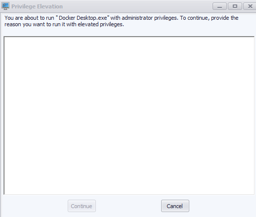

Docker Setup
Installation
brew install --cask docker
Or download from docker.com
curl -fsSL https://get.docker.com | sh
sudo usermod -aG docker $USER
# logout and login
# winget
winget install Docker.DockerDesktop
# scoop
scoop install docker
Or download from docker.com
Running Docker in VDI Environment
In corporate VDI (Virtual Desktop Infrastructure) environments, Docker Desktop may require elevated privileges to run properly.
Step 1: Right-click Docker Desktop
Right-click the Docker Desktop shortcut and select Run with Administrator Privileges.

Step 2: Provide Elevation Reason
A Privilege Elevation dialog will appear. Enter a reason (e.g., "Development work") and click Continue.

Step 3: Confirmation
You'll see a confirmation that Docker is now running with administrator privileges.

TIP: If Docker fails to start containers or shows permission errors, running with elevated privileges usually resolves these issues in VDI environments.
Login to Azure Container Registry
Before pulling images from Azure Container Registry (ACR), you need to authenticate with Azure first.
WARNING: In VDI environments, run these commands in a normal terminal (not elevated). ACR login does not work in terminals started with administrator privileges.
Step 1: Login to Azure
az login
Or use device code for remote/VDI sessions:
az login --use-device-code
Step 2: Select Subscription
List available subscriptions and select the correct one:
az account list -o table
az account set -s "<subscription-name-or-id>"
Step 3: Login to ACR
az acr login -n <acr-name>
Step 4: Docker Login
docker login <acr-name>.azurecr.io
NOTE: ACR login tokens are valid for 3 hours. Re-run
az acr loginanddocker loginif you get authentication errors.
Troubleshooting: Docker Login Still Fails
If docker login still doesn't work, edit the Docker config file:
- Windows:
%USERPROFILE%\.docker\config.json - macOS/Linux:
~/.docker/config.json
Change credsStore from:
"credsStore": "wincred",
To:
"credsStore": "",
Then retry the docker login command.
Custom Install Path (Windows)
Don't double-click the installer. Use command line to specify custom paths.
# Run as Administrator
cd ~\Downloads
Start-Process -Wait -FilePath ".\Docker Desktop Installer.exe" -ArgumentList "install", "-accept-license", "--installation-dir=D:\Docker", "--wsl-default-data-root=D:\Docker\images"
:: Run as Administrator
cd %USERPROFILE%\Downloads
start /w "" "Docker Desktop Installer.exe" install -accept-license --installation-dir=D:\Docker --wsl-default-data-root=D:\Docker\images
Flags explained:
| Flag | Purpose |
|---|---|
-accept-license |
Auto-accept license agreement |
--installation-dir=D:\Docker |
Install Docker app to D:\Docker |
--wsl-default-data-root=D:\Docker\images |
Store WSL data & images on D: |
NOTE: Without
--wsl-default-data-root, images still go to%HOME%\AppData\Local\Docker
Custom Data Path (Post-Install)
Docker Desktop → Settings → Resources → Disk image location
Edit /etc/docker/daemon.json:
{
"data-root": "/path/to/docker"
}
sudo systemctl restart docker
Docker Desktop → Settings → Resources → Disk image location
Common Commands
docker ps # running containers
docker ps -a # all containers
docker images # list images
docker system prune -a # cleanup
Compose
docker compose up -d
docker compose down
docker compose logs -f